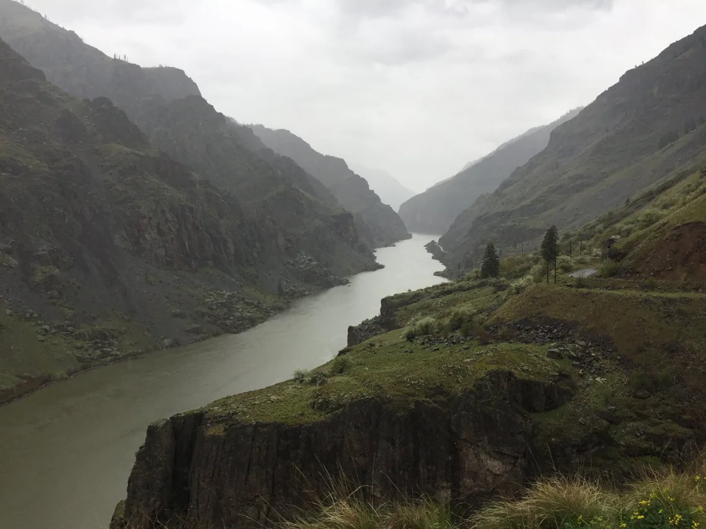

The valley as a starting point
The Snake and Clearwater meet at Lewiston. Look down at that meeting of rivers and the mill, the freight train, and the men balancing logs with poles begin to belong to the same story. That’s the Idaho idea behind Rimrock.
Hold the view
In the arrival study, the first distant landmark is the standpipe. The wider view opens at the rise. The canyon edge is meant to remain visible as land in its own right, beyond the hotel, yard, and working districts.
Hells Canyon Expedition
The expedition is reserved for a later phase. The canyon view belongs in the visitor’s understanding of the park from the beginning. The attraction has its own later design and feasibility work.

From the design for Project Rimrock, a proposed Idaho destination.
Return to the park guide